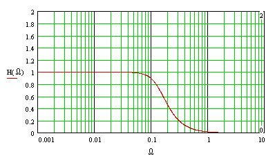
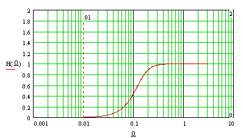

Beginners
Features
Departments

Filtering
Hans Mikelson
filter.orc filter.sco limit.wav
Introduction
Filters are used to separate mixtures into different components. A complex sound can be considered a mixture of sounds of different frequencies. Audio filters can be used to separate high frequency sounds from low frequency sounds. Usually this means allowing sounds of certain frequencies to pass unaltered while blocking sounds of other frequencies. Certain filters can be used to amplify or boost certain frequencies. This article will only describe a few of the most commonly used filters: the low pass filter, the high pass filter and the band pass filter.
The low pass filter
A low pass filter is designed to allow all frequencies below a cut off frequency to pass while preventing all frequencies above the cut off frequency from passing. Figure 1 shows a frequency response from a low pass filter. Notice that the transition is not an abrupt vertical line but instead a sloping line which is rounded at the top and bottom. This means that the filter allows some high frequencies through and reduces some of the frequencies below the filter cut off frequency. The cut off frequency is defined as the point where the curve has dropped to about .707 or 1/sqrt(2).

Figure 1. Frequency response of a low pass filter.
A good way to understand the effect of a filter is to apply the filter to white noise and listen to the result. The following Csound code implements this:
arnd rand 1 ; White noise aout butterlp arnd, kfco ; Low pass filter
; Sta Dur Amp Fco1 Fco2 i10 0 10 30000 5000 100
In the above example the filter is swept from 5000 Hz to 100 Hz. Instrument 20 applies a low pass filter to a spoken phrase.
The high pass filter
The high pass filter is the opposite of the low pass filter blocking low frequencies but allowing high frequencies to pass.

Figure 2. Frequency response of a high pass filter.
High pass filters have many different uses. A high pass filter with a very low cut off frequency (~20 Hz) can be used to remove DC from a signal. A high pass filter with a moderately high cut off frequency (~1500 Hz) can be used to simulate the flared end of a clarinet or horn in a waveguide model. A high pass filter can create a sort of "radio voice" sound effect when applied to vocals as in the following example.
asig diskin isamp, 1 ; Read sample from disk aout butterhp asig, ifc ; High pass filter aout = aout*iamp*kdclk ; Amplify
; Sta Dur Amp Sample Fc i21 5 4.63 1 "limit.wav" 2000
High pass filters can be used to isolate the high's for additional processing as in a de-esser. High pass filters are useful when synthesizing certain percussion instruments such as cymbals.
The band pass filter
The band pass filter only allows frequencies within a certain range of the center frequency to pass. Band pass filters are useful for creating formants or simulating the resonances of acoustic resonators like a guitar or violin body. The following example processes the sound as if it had been produced inside a particular resonating body
af1 butterbp asig, if1, if1/8 ; Band pass filter af2 butterbp asig, if2, if2/8 ; Band pass filter af3 butterbp asig, if3, if3/8 ; Band pass filter aout = (af1+af2+af3)*iamp*kdclk ; Amplify
; Sta Dur Amp Sample F1 F2 F3 i22 10 4.63 1 "limit.wav" 116 422 849
Band pass filters are used to isolate certain frequency bands for further processing.
Filter types
Csound has many different types of filters. Below is a table listing most of Csounds filters categorized by the type of frequency response:
Links
http://www.student.oulu.fi/~oniemita/DSP/INDEX.HTM Yehar's sound DSP tutorial for the braindead. This is an excellent introduction to digital filter theory.
http://www.physics.uq.oz.au/people/jones/ph360/lectures/topic4/l4/l4.html Frequency Response of Discreet Systems. Some lecture notes on filters.